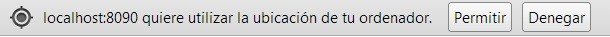
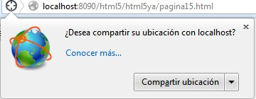
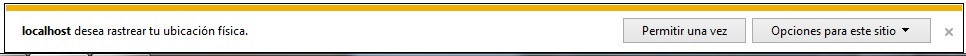
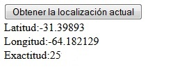

La geolocalización es una característica de HTML5 que nos permite acceder a ubicación geográfica del usuario del sitio web con una precisión absoluta en el caso que el dispositivo que utilice tenga GPS.
La precisión va a disminuir si no tiene GPS y debe utilizarse la IP del proveedor de servicios de Internet. De todos modos veremos que podemos detectar dicha precisión.
El navegador administra la geolocalización mediante un objeto llamado geolocation que es un atributo del objeto navigator.
El objeto geolocation cuenta con un método llamado getCurrentPosition que le enviamos el nombre de la función que se llamará cuando se obtenga la posición.
Como la geolocalización es una característica que puede invadir nuestra privacidad (tengamos en cuenta que estamos informando al sitio web el lugar exacto donde estamos parados en ese momento) el navegador nos muestra un diálogo para que aceptemos o no informar nuestra posición.
Los mensajes dependiendo del navegador son similares.
En el Chrome:
En el Firefox:
En el Internet Explorer:
Confeccionar una aplicación que permita obtener la latitud, longitud de nuestra posición y además con que precisión se obtuvo en metros.
<!DOCTYPE HTML>
<html>
<head>
<title>Prueba</title>
<script type="text/javascript">
window.addEventListener('load', inicio, false);
function inicio() {
document.getElementById('obtener').addEventListener('click', recuperarLocalizacion, false);
}
function recuperarLocalizacion() {
if (navigator.geolocation) {
navigator.geolocation.getCurrentPosition(mostrarCoordenada);
} else {
alert('El navegador no dispone la capacidad de geolocalización');
}
}
function mostrarCoordenada(posicion) {
document.getElementById('dato').innerHTML='Latitud:'+
posicion.coords.latitude+
'<br> Longitud:'+posicion.coords.longitude+
'<br>Exactitud:'+posicion.coords.accuracy;
}
</script>
</head>
<body>
<input type="button" id="obtener" value="Obtener la localización actual">
<br>
<span id="dato"></span>
</body>
</html>
Analicemos el código. Disponemos un botón y un elemento HTML span para informar en tiempo de ejecución las coordenadas:
<input type="button" id="obtener" value="Obtener la localización actual"> <br> <span id="dato"></span>
En el evento load ejecutamos la función inicio asociando la función que se debe ejecutar al presionar el botón:
window.addEventListener('load', inicio, false);
function inicio() {
document.getElementById('obtener').addEventListener('click', recuperarLocalizacion, false);
}
Ahora si analicemos lo nuevo que sucede cuando se presiona el botón:
function recuperarLocalizacion() {
if (navigator.geolocation) {
navigator.geolocation.getCurrentPosition(mostrarCoordenada);
} else {
alert('El navegador no dispone la capacidad de geolocalización');
}
}
Disponemos un if para verificar si nuestro navegador es moderno y dispone de la capacidad de geolocalización mediante el objeto geolocation. Si el if se verifica verdadero llamamos al método getCurrentPosition y le pasamos como dato el nombre de la función que se ejecutará cuando el navegador obtenga el dato de la posición.
La función mostrarCoordenada se ejecuta cuando el navegador obtuvo la posicion actual y la recibe como parámetro esta función. El objeto que llega como parámetro dispone de una propiedad llamada coords que contiene entre otros datos la latitud, longitud, precisión en metros etc.:
function mostrarCoordenada(posicion) {
document.getElementById('dato').innerHTML='Latitud:'+
posicion.coords.latitude+
'<br> Longitud:'+posicion.coords.longitude+
'<br>Exactitud:'+posicion.coords.accuracy;
}
Cuando ejecutamos la aplicación luego de aceptar informar de nuestra posición veremos los valores de la latitud, longitud y presición:
